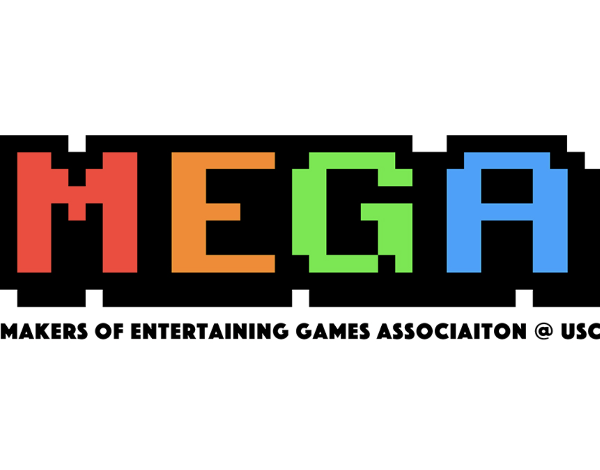
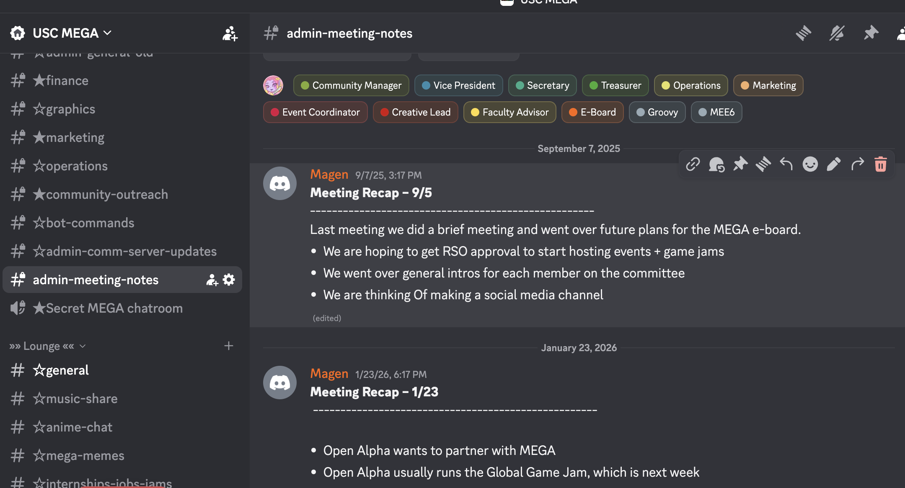

USC MEGA

MEGA is USC’s student game development organization, bringing together programmers, designers, artists, and producers to collaborate on games and events. As E-Board Secretary, I coordinate meetings, communication, documentation, and event logistics.
My role focuses on keeping communication, documentation, and organization consistent across the E-Board and the broader MEGA community.
MEGA E-Board

MEGA provides opportunities for students across different game development disciplines to meet collaborators, share work, participate in events, and contribute to game projects throughout the academic year.
Through my E-Board role, I help keep these activities organized by supporting communication, scheduling, documentation, and coordination behind the scenes.